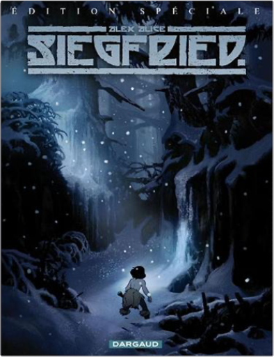

Books
Movies
Albums
Videogames
Games
BD
BD Camille
Blu-ray
Business
Camille
Comics
Cooking
Lego
Manga
Pauline
Photography
Sport
Star Wars
T'choupi
Travel
TV Shows
Un livre dont vous êtes le héro
Vinyl
Walt Disney
9
10
11
12
13
rapaces, tome 4
enrico marini, jean dufaux
4
saint-exupéry : le dernier vol
hugo pratt
sherlock holmes & le necronomicon, tome 1
cordurié, laci
sherlock holmes & le necronomicon, tome 2
cordurié, laci
sherlock holmes & les vampires de londres, tome 1
cordurié, laci
sherlock holmes & les vampires de londres, tome 2
cordurié, laci

siegfried, tome 1
alex alice
5
siegfried, tome 2 : la walkyrie
alex alice
4.5
siegfried, tome 3 : le crépuscule des dieux, édition spéciale
alex alice
sky doll : doll's factory
alessandro barbucci, barbara canepa
sky doll, tome 1 : la ville jaune
alessandro barbucci, barbara canepa
5
sky doll, tome 1: spaceship collection
alessandro barbucci, barbara canepa
3
9
10
11
12
13


 Made with Delicious Library Made with Delicious Library
Made with Delicious Library Made with Delicious Library